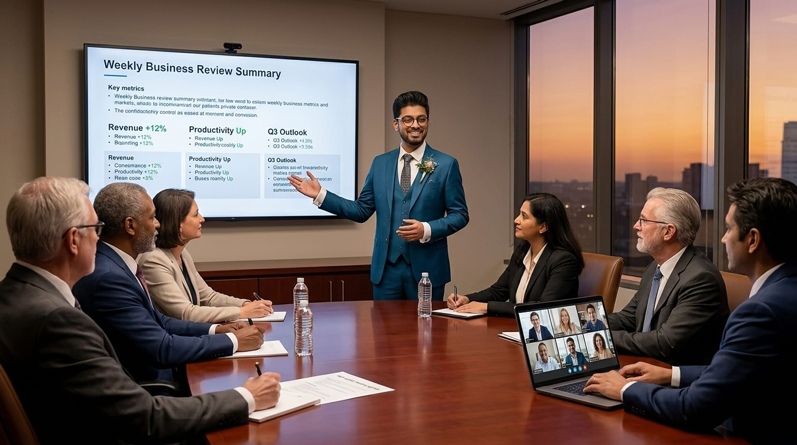

Reporting Ecosystems
Build the single source of truth.
I design BI ecosystems that global leadership actually trusts and uses: Weekly Business Reviews, live KPI command dashboards and holistic stock reports.
23 live metrics · 1 dashboard
Business Intelligence Manager · Daraz / Alibaba Group · Dhaka
I turn complex commercial and supply-chain data into faster, sharper decisions across five markets.
Scroll to begin
8+
Years in e-commerce analytics & supply chain
$100K+
Inventory value protected
4h→20m
Management reporting wait time
5
Markets · BD · PK · LK · NP · MM
2×
Faster dashboards for global stakeholders
Why I do this work
Data should shorten the distance between a question and a decision.
Every business already has more data than it can read. The advantage belongs to the teams that can act on it first. My job is to build the systems (the pipelines, the reviews, the dashboards) that make the right move obvious, and make it obvious fast.
Three pillars
Three disciplines, one outcome: decisions that happen sooner and land better.
Build the single source of truth.
I design BI ecosystems that global leadership actually trusts and uses: Weekly Business Reviews, live KPI command dashboards and holistic stock reports.
23 live metrics · 1 dashboardMake the wait disappear.
I automate high-priority reporting cycles and partner with engineering on the data-pipeline roadmap, so decisions never queue behind reports.
4 hrs → 20 minTurn insight into margin.
I connect analytics to P&L across five countries: aging-inventory risk, promotion engines, pricing and bundling, and fraud anomalies.
−5% → +2% gross marginThe story
2012 to 2017
BBA · Marketing & Finance
Graduated Magna Cum Laude on a 25% merit-based scholarship.
2017
Intern, B2B
A first seat at the deal table, designing propositions for enterprise clients.
2018
Executive, Retail
Fused revenue, warehouse, product and traffic data into one stock report the whole team relied on.
2020
Daraz · Alibaba Group
Automated reporting with Power BI & Power Query, making it 50% faster. Built SQL models for forecasting and replenishment.
2021
Daraz · Alibaba Group
$100K of aging inventory protected. Retail gross margin moved −5% → +2%. Launched three promotion engines and trained 50 people for UAT.
2022
Daraz · Alibaba Group
Wrote the BRDs and functional specs, and designed solutions alongside teams in five countries.
2023 to now
Daraz · Alibaba Group
Leading five analysts across three countries. Launched Weekly Business Reviews. Reporting cut from 4 hours to 20 minutes, dashboards 2× faster, and high-risk anomalies surfaced with the Fraud Detection team.
“Same company, six roles. Every step up came from making someone's decision easier.”
Capabilities
Building and mentoring multi-country analyst teams, running Weekly Business Reviews, and setting the reporting roadmap with leadership.
From raw tables to trusted dashboards: modelling, transformation, and automated pipelines that stay fast at global scale.
Certified in applied AI, bringing NLP, generative AI, retrieval-augmented generation and agents into the analytics workflow.
Case files
Company data stays confidential, so these are the stories behind the numbers.
Next chapter
Open to senior BI and analytics leadership roles, and to conversations with teams who want faster decisions.